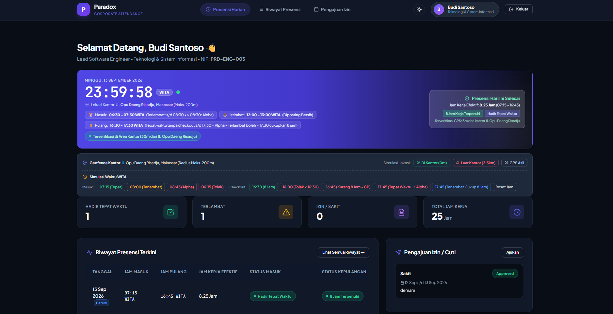
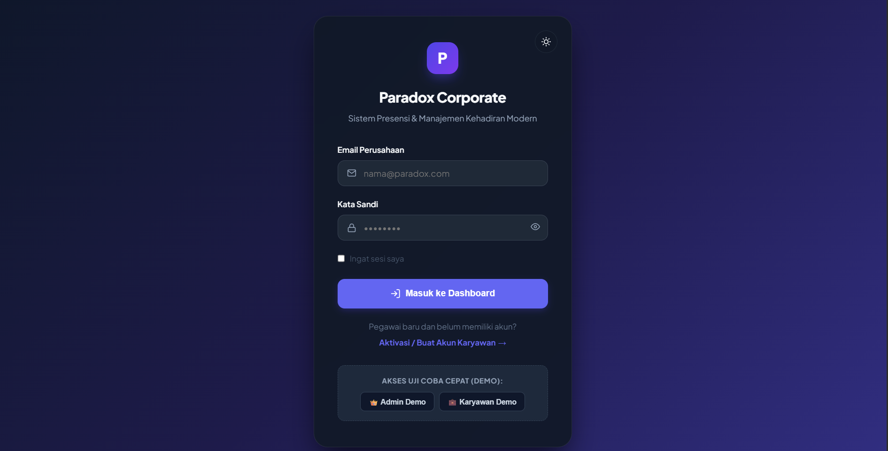
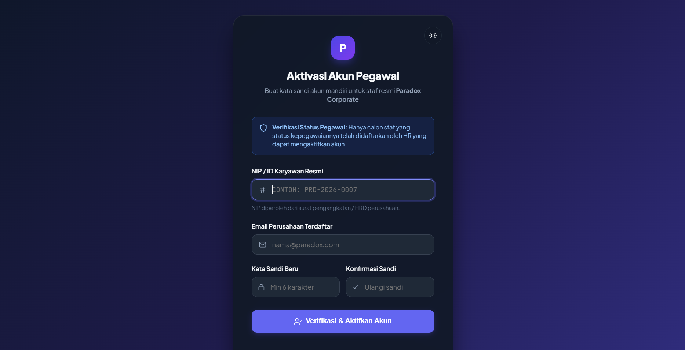
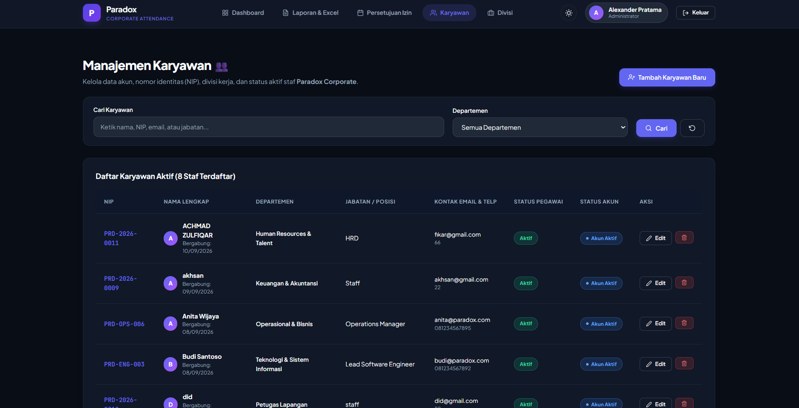
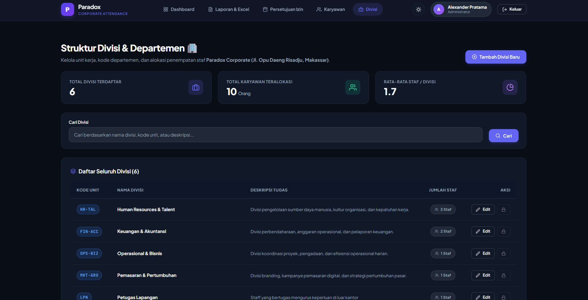
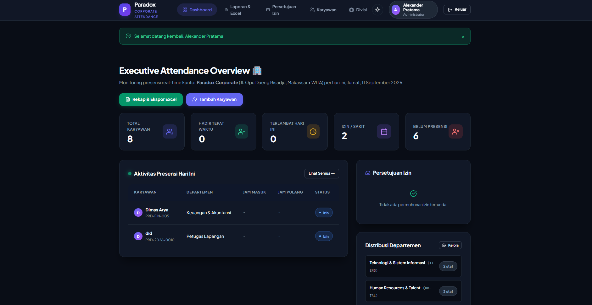
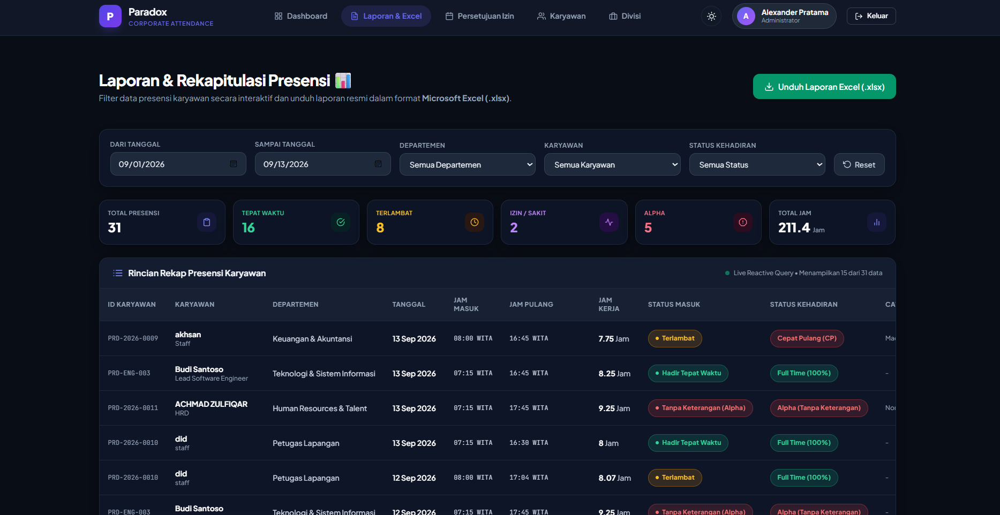
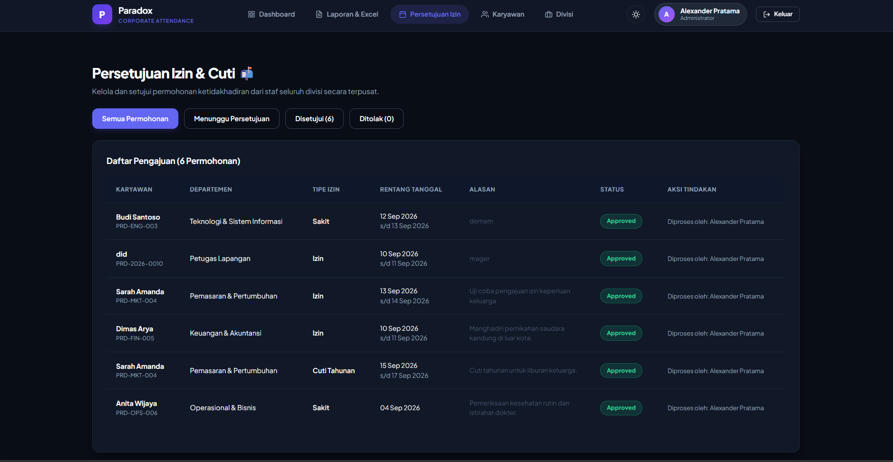

Sistem Absensi Karyawan Berbasis Geofencing
Mencegah kecurangan presisi kehadiran mobile pada lokasi kantor terdistribusi. Dibangun menggunakan Laravel 10 dengan Livewire 3 dan Alpine.js, sistem secara kontinyu memvalidasi letak geografis karyawan menggunakan formula lingkaran bola Haversine dengan interval sinkronisasi 15 detik tanpa membebani browser.
LOGIKA HAVERSINE (PHP NATIVE / SERVICE CLASS)
RADIUS VALIDASI: 50 METER
$dLat = deg2rad($latEmp - $latOffice);
$dLon = deg2rad($lonEmp - $lonOffice);
$a = sin($dLat/2)**2 + cos(deg2rad($latOffice)) * cos(deg2rad($latEmp)) * sin($dLon/2)**2;
$jarakMeter = 6371000 * (2 * atan2(sqrt($a), sqrt(1 - $a)));
$dLon = deg2rad($lonEmp - $lonOffice);
$a = sin($dLat/2)**2 + cos(deg2rad($latOffice)) * cos(deg2rad($latEmp)) * sin($dLon/2)**2;
$jarakMeter = 6371000 * (2 * atan2(sqrt($a), sqrt(1 - $a)));
ANTARMUKA MONITORING RADAR
LATENSI < 200MS

Galeri Lengkap 8 Antarmuka UI Paradox Corporate Attendance
Seluruh tangkapan layar asli sistem yang dikelompokkan berdasarkan alur operasional pengguna dan hierarki tata kelola.
•
Alur 1: Presensi Pegawai & Radius Geofencing (3 Layar)
LAYAR 01
Dashboard Karyawan: Status presensi & radius kantor

LAYAR 02Login Portal: Autentikasi sesi kredensial aman

LAYAR 03Aktivasi Akun: Onboarding mandiri pegawai baru
•
Alur 2: Manajemen Karyawan & Struktur Organisasi (2 Layar)

LAYAR 04Manajemen Karyawan: Data direktori & status aktif

LAYAR 05Struktur Divisi: Pemetaan unit kerja & kuota tim
•
Alur 3: Dashboard Admin, Rekapitulasi & Cuti (3 Layar)

LAYAR 06Dashboard Admin: Agregasi presensi seluruh divisi

LAYAR 07Laporan Karyawan: Riwayat presensi & audit log

LAYAR 08Persetujuan Izin: Workflow verifikasi cuti pegawai